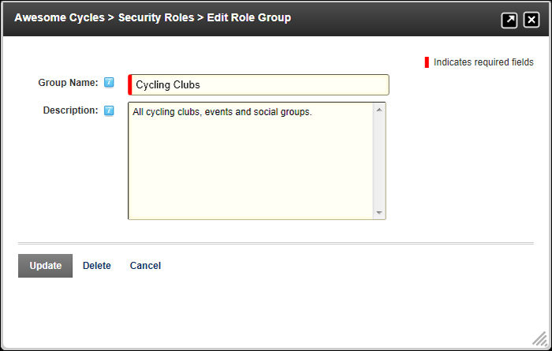

How to add a role group to a Security Role using the Security Roles module. Role Groups enable you to group multiple roles together, making them easier to manage. E.g. The Role Group called Staff could have the following Security Roles associated with it: All Staff, Telemarketing, Marketing, Sales, Information Technology, etc. Roles can be filtered by Role Group, which is useful on sites with a large number of roles. Once a role group has been added, one or more security roles can be added to the role group.
